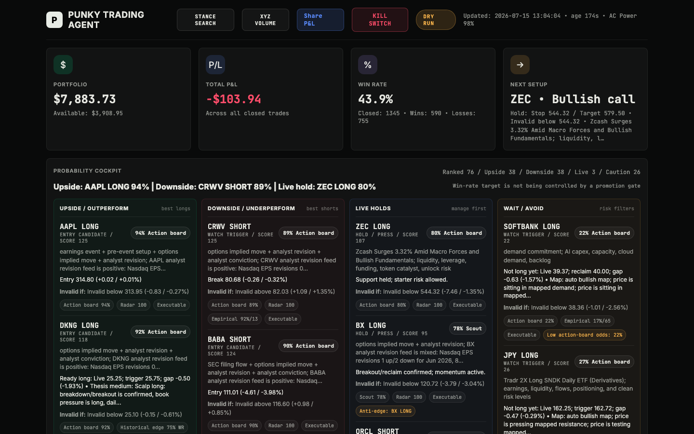

01 / Trading intelligenceIn use
Crypto Trading Agent
I built this to slow down my decision-making before a trade and make my reviews more honest afterwards. It ranks setups, watches triggers and learns from my calls, missed moves and realized outcomes.
View public repository